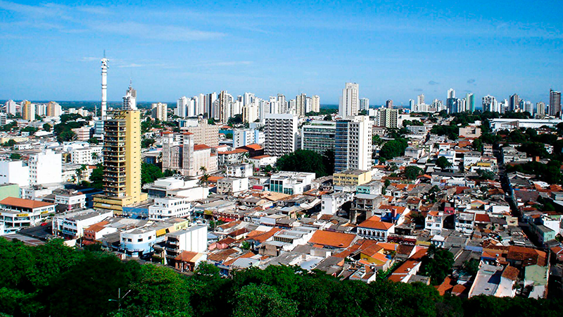

Mato Grosso é um estado localizado na região Centro-Oeste do Brasil, com uma população de cerca de 3,5 milhões de habitantes até 2023. É conhecido por sua vasta biodiversidade, grandes áreas de cerrado e floresta amazônica, além de ser um importante produtor de soja, algodão e carne bovina. Entre os pontos turísticos mais famosos estão o Pantanal, uma das maiores áreas alagadas do mundo, ideal para observação de animais e ecoturismo, o Parque Nacional do Xingu, e a cidade de Chapada dos Guimarães, com suas formações rochosas impressionantes e cachoeiras. O governador atual de Mato Grosso, até outubro de 2023, é Mauro Mendes.
